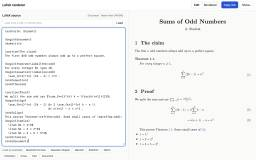
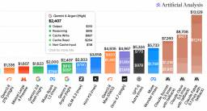
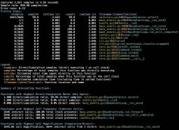

Simon Willison's Weblog
フィード

Quoting Addy Osmani, Morgan Westlee Lunt, and Qing Wang
Simon Willison's Weblog
<blockquote cite="https://claude.dev/blog/solving-code-review-at-anthropic/"><p>We think "did a human read the code?" is an imprecise proxy for "what could go wrong with this change, and which check—automated or human—is the right one to catch it?"</p><p>Asking that question also changed <em>when</em> review happens. Before, review was a gate at the end of the road: write the code, open a PR, wait for your colleague.</p><p>Now, review runs continuously, more like spellcheck while you write. Most changes have been reviewed and fixed by Claude at least once before a human is asked to look. This catches most routine mistakes, and saves team attention for higher-level questions and scrutiny.</p></blockquote><p class="cite">— <a href="https://claude.dev/blog/solving-code-review-at-anthropic/">Addy Osmani, Morgan Westlee Lunt, and Qing Wang</a>, How the Claude Code team does code review</p> <p>Tags: <a href="https://simonwillison.net/tags/anthropic">anthropic</a>, <a href="https://sim
18時間前
Chirp Pong
Simon Willison's Weblog
<p><strong>Tool:</strong> <a href="https://tools.simonwillison.net/chirp-pong">Chirp Pong</a></p> <p>Another game experiment - I wanted to see if it was feasible to have a two player game on two separate phones running in static HTML where the networking code uses chirps sent via the microphone. It seems to work!</p><blockquote><p><code>Build a two player competitive pong like game where two players use their phones close to each other and the game state is sent via audio noises which the web microphone API can interpret - but add graphical and gameplay twists to make it a lot more fun and intertwine than pong</code></p></blockquote><p>Claude Opus 5.5 Extra <a href="https://claude.ai/code/session_019awUnNB7NoYd7noBNAsNdd">in Claude Code</a>.</p> <p>Tags: <a href="https://simonwillison.net/tags/game-design">game-design</a>, <a href="https://simonwillison.net/tags/ai">ai</a>, <a href="https://simonwillison.net/tags/generative-ai">generative-ai</a>, <a href="https://simonwillison.net/tag
2日前
Anthropic tells investors quarterly revenue up nearly 50% to $16.8bn ahead of IPO
Simon Willison's Weblog
<p><strong><a href="https://www.ft.com/content/11632d03-358c-454b-af95-d06d4072932b?syn-25a6b1a6=1">Anthropic tells investors quarterly revenue up nearly 50% to $16.8bn ahead of IPO</a></strong></p>The phrase "told investors" appears four times in this FT article, which reports on Anthropic's day of hosting investors on Wednesday. Lots of details in here from "<a href="https://simonwillison.net/2023/Nov/22/deciphering-clues/#hints-to-look-out-for">people with knowledge of the matter</a>".</p><p>Key things I learned from the article:</p><ul><li>Q1 revenue (Jan/Feb/Mar) was "about $4.8bn"</li><li>Q2 (Apr/May/Jun) was $11.5bn</li><li>Q3 (Jul/Aug/Sep) was $16.8bn</li><li>In Q3: $1.70 in revenue for every $1 spent on "computing power"</li><li>Adjusted operating margins (excluding stock-based compensation) were 11%</li></ul><p>This point about distillation is worth quoting in full (highlight mine):</p><blockquote><p>The start-up has also clamped down on “distillation” — a controversial prac
2日前

LaTeX renderer
Simon Willison's Weblog
<p><strong>Tool:</strong> <a href="https://tools.simonwillison.net/latex">LaTeX renderer</a></p> <p>Inspired by Paul Ford and Aboard Foundary's new web app <a href="https://tinylittleoffice.com/">Tiny Little Office</a>, which provides a suite of web app content editors (a Word Processor, Outliner, Presentation Builder, Spreadsheet, Calculator, Drawing Tool, Diagram Maker, Animator, Calendar, and Trip Planner).</p><p>Tiny Little Office's signature trick is to store all of the document data in the <code>#fragment</code> section of the URL, so every document created using it becomes a bookmarkable and shareable link.</p><p>It also has <a href="https://tinylittleoffice.com/llms.txt">an llms.txt file</a> telling agents how to construct URLs that will render as documents. Claude <a href="https://claude.ai/share/239301ff-edde-420e-b433-b9c16fe40a6c">used that file</a> to generate <a href="https://tinylittleoffice.com/#/v1/deck/zXVVdb9tGEHznr1hED2kBSbZcO4UFtIHTuCgQtylstwH6Uq7Io3gRdcfeHS1T_fjt
3日前

Tree Appreciator 1
1
Simon Willison's Weblog
<p><strong>Tool:</strong> <a href="https://tools.simonwillison.net/tree-appreciator">Tree Appreciator</a></p> <p>Another game experiment with Claude. This one used the default Claude iPhone app (chat mode, not Claude Code mode), where I prompted Claude Opus 5.5 Max with:</p><blockquote><p><code>Build a three js game called "Tree appreciator" - it shows you two algorithmically generated trees and the game mechanics is about appreciating the differences between them. Think hard about how to make sure it is both fun and beautiful.</code></p></blockquote><p>Somewhat embarrassingly given <a href="https://simonwillison.net/2026/Sep/27/2026-in-llms-so-far/#simon-willison-2026-in-llms.059.webp">my recent talk</a>, I've found that telling Opus 5.5 "make sure it is fun" works uncomfortably well. In this case Claude <a href="https://claude.ai/share/ee7de555-f85c-4ff0-96cb-d51ed5e479e9">crunched for 3 hours and 7 minutes</a> before retuning a cosy little spot-the-difference game with music and an
3日前
AI is mass decompiling games. That's both awesome and scary.
Simon Willison's Weblog
<p><strong><a href="https://popcar.bearblog.dev/ai-is-mass-decompiling-games-thats-both-awesome-and-scary/">AI is mass decompiling games. That's both awesome and scary.</a></strong></p>Indie game developer Popcar talks about the recent wave of AI-powered decompilation of existing games, enabling weird mashups between existing games, and producing a boom in game preservation projects to get old games working on new hardware (often in a browser using WebAssembly).</p><p>I like how this piece captures both the positives and the negatives of this new development:</p><blockquote><p>Most people already realized the scary part by now. If AI can decompile games and software, then the entire tech industry is about to explode. Anybody can decompile other software and use it any way they'd like, and nobody can stop them. Companies can steal from competitors. Your paid game or app can be open-sourced against your will. This isn't exclusive to old video games, we can apply this to <em>any</em
3日前

Redesigning source control at Anthropic
Simon Willison's Weblog
<p><strong><a href="https://www.anthropic.com/engineering/redesigning-source-control">Redesigning source control at Anthropic</a></strong></p>Interesting piece from Anthropic describing why and how they built their own custom alternative to Git, based on the dramatic increase in rate of changes to their code after the past six months.</p><blockquote><p>In May 2026, Anthropic averaged around 2,500 code changes merged per day; as of September, we merged over 30,000 per day.</p></blockquote><p>They included a chart showing those changes. I <a href="https://claude.ai/share/aefcdd4a-9364-40c1-927a-29bf445894fc">had Claude modify their chart</a> (<a href="https://gist.github.com/simonw/4a16dff066fd9763faf8642f797905be">code here</a>) to add markers for the public releases of each of their models in 2026:</p><p><img alt="Stacked bar chart titled “Changes merged per day”, for the Anthropic monorepo, January–September 2026. Each day’s bar is split into pull requests (blue) and antique change r
4日前

llm-gemini 0.35
Simon Willison's Weblog
<p><strong>Release:</strong> <a href="https://github.com/simonw/llm-gemini/releases/tag/0.35">llm-gemini 0.35</a></p> <p>I added support to <a href="https://github.com/simonw/llm-gemini">llm-gemini</a> for the <a href="https://blog.google/innovation-and-ai/models-and-research/gemini-models/gemini-4-argon/">new Gemini 4 Argon</a> model, made available today via the Gemini API and for customers of their $100/month subscription plan.</p><p>Here are <a href="https://tools.simonwillison.net/markdown-svg-renderer?url=https%3A%2F%2Fgist.github.com%2Fsimonw%2Fd741e4420dea14c460f0108ac22dbc26">the low, medium and high pelicans</a>. As expected, they are all excellent: Gemini has a track record of producing great SVGs, and are the only lab where I know their <a href="https://twitter.com/sunjiao123sun_/status/2024555516551372920">staff have invested in SVG specifically</a> (and who have <a href="https://simonwillison.net/2026/Feb/19/gemini-31-pro/#jeff-dean">boasted about their pelicans</a> befo
4日前
Quoting Geoffrey Huntley
Simon Willison's Weblog
<blockquote cite="https://ghuntley.com/agency/"><p>If the agent isn't using my diagnostics library, I could introspect and update AGENTS.md, but there's still a delta, and it'll drift. Instead, I write a pre-commit hook that checks the git diff for direct calls to observability modules that bypass my diagnostics module. Boom: fail the commit, inject a prompt telling the agent to use the diagnostics library. All of a sudden it's ten out of ten.</p></blockquote><p class="cite">— <a href="https://ghuntley.com/agency/">Geoffrey Huntley</a>, nobody should type code by hand anymore. here's what's left.</p> <p>Tags: <a href="https://simonwillison.net/tags/coding-agents">coding-agents</a>, <a href="https://simonwillison.net/tags/generative-ai">generative-ai</a>, <a href="https://simonwillison.net/tags/git">git</a>, <a href="https://simonwillison.net/tags/agentic-engineering">agentic-engineering</a>, <a href="https://simonwillison.net/tags/ai">ai</a>, <a href="https://simonwillison.net/t
4日前
web-edit 0.1a1
Simon Willison's Weblog
<p><strong>Release:</strong> <a href="https://github.com/simonw/web-edit/releases/tag/0.1a1">web-edit 0.1a1</a></p> <p>Includes <a href="https://github.com/simonw/web-edit/pull/1">performance optimizations</a> written <a href="https://claude.ai/code/session_01LE2R4P74P9GGUbE6yQ5YBt">by Claude Opus 5.5</a> after I fed it <a href="https://simonwillison.net/2026/Oct/12/python-3-15-web-edit-profiling/">this Python 3.15 profiling report</a> generated by GPT-6 Astra.</p> <p>Tags: <a href="https://simonwillison.net/tags/profiling">profiling</a>, <a href="https://simonwillison.net/tags/projects">projects</a></p>
5日前
llm-meta-ai 0.2
Simon Willison's Weblog
<p><strong>Release:</strong> <a href="https://github.com/simonw/llm-meta-ai/releases/tag/0.2">llm-meta-ai 0.2</a></p> <p>Meta AI release <a href="https://research.meta.ai/blog/muse-wonder">Muse Wonder</a> (and Muse Wonder Full), their new "most capable models". These look like they may be Meta's first <a href="https://simonwillison.net/2026/Sep/27/2026-in-llms-so-far/#simon-willison-2026-in-llms.042.webp">Fable class models</a> - Artificial Analysis <a href="https://artificialanalysis.ai/models/muse-wonder">scores Muse Wonder (Max)</a> as equivalent to GPT-6.1 Sol.</p><p>I updated my <code>llm-meta-ai</code> plugin for the new model. Here are <a href="https://tools.simonwillison.net/markdown-svg-renderer?url=https://gist.github.com/simonw/185cff7ff0b11379725abf7f78d5d2b2">pelicans for Muse Wonder</a> for the six reasoning levels: minimal, low, medium, high, xhigh, max. This is the max one:</p><p><img alt="Blue cycling helmet, bicycle is missing one bar but otherwise an OK shape, has m
5日前

Hello Python 3.15, goodbye 3.10, and now I can use 3.11 1
Simon Willison's Weblog
<p>Python 3.15 <a href="https://www.python.org/downloads/release/python-3150/">is here</a>! Here's the essential <a href="https://docs.python.org/3.15/whatsnew/3.15.html">What's new in Python 3.15</a> guide, this year curated by 3.14 and 3.15 release manager Hugo van Kemenade. As someone who builds open source software that works in every supported Python version, I get to say goodbye to Python 3.10 and start embracing features from Python 3.11.</p><p>First, some highlights from Python 3.15.</p><h4 id="explicit-lazy-imports">Explicit lazy imports</h4><p>I'm most excited about <a href="https://docs.python.org/3.15/whatsnew/3.15.html#pep-810-explicit-lazy-imports">Explicit lazy imports</a> from <a href="https://peps.python.org/pep-0810/">PEP 810</a>. These let you import modules like so:</p><pre><span class="pl-s1">lazy</span> <span class="pl-k">import</span> <span class="pl-s1">json</span><span class="pl-s1">lazy</span> <span class="pl-k">from</span> <span class="pl-s1">pathlib</span>
5日前
Profiling web-edit with Python 3.15: flame graphs and source heatmaps
Simon Willison's Weblog
<p><strong>Research:</strong> <a href="https://github.com/simonw/research/tree/main/python-3-15-web-edit-profiling#readme">Profiling web-edit with Python 3.15: flame graphs and source heatmaps</a></p> <p>I put the <a href="https://simonwillison.net/2026/Oct/12/python-3-15/#a-sampling-profiler">new Python 3.15 profiler</a> through its paces by having GPT-6 Astra Extra High in Codex run it against my new <a href="https://simonwillison.net/2026/Oct/12/web-edit/">web-edit app</a>:</p><blockquote><p><code>I need a Python 3.15 flame graph and heatmap demo of the "web-edit" app from PyPI - research first then make me those demos</code></p></blockquote><p>Here's the resulting example <a href="https://simonw.github.io/research/python-3-15-web-edit-profiling/artifacts/flamegraph.html">flame graph</a> and <a href="https://simonw.github.io/research/python-3-15-web-edit-profiling/artifacts/heatmap/index.html">heatmap</a>.</p> <p>Tags: <a href="https://simonwillison.net/tags/profiling">profiling</a
5日前

web-edit 0.1a0
Simon Willison's Weblog
<p><strong>Release:</strong> <a href="https://github.com/simonw/web-edit/releases/tag/0.1a0">web-edit 0.1a0</a></p> <p>I was working on a project from my phone using Codex Remote when I found myself wanting to edit a credentials file without round-tripping those credentials through the LLM itself.</p><p>So... I had Codex and GPT-6 Astra Extra High build this Python web app which provides a web UI for viewing and editing files in a folder. It's intended to be run over Tailscale, so I can have an agent start this running and then edit files via my Tailscale network directly from my phone.</p><p>Here's the interface for browsing files in a folder:</p><p><img alt="Screenshot of a web file manager interface. Header reads "WORKSPACE" above the title "Files", with buttons "Refresh", "Upload files" and "New file" (dark green). A breadcrumb shows "web-edit / web_edit / static". A table with columns "Name", "Size",
5日前
datasette-ports 0.4
Simon Willison's Weblog
<p><strong>Release:</strong> <a href="https://github.com/datasette/datasette-ports/releases/tag/0.4">datasette-ports 0.4</a></p> <p>My plugin for detecting and listing all Datasette instances on the current machine now works with the latest version, and displays the detected PID as well. Knowing the PID makes it easier to <a href="https://simonwillison.net/2026/Oct/12/python-3-15/#a-sampling-profiler">attach the new Python 3.15 profiler</a>.</p> <p>Tags: <a href="https://simonwillison.net/tags/datasette">datasette</a></p>
5日前
Dwarf Fortress uses version control now
Simon Willison's Weblog
<p>I remember hearing a while ago that Dwarf Fortress didn't use version control. That fact has been lodged in my head, because given its inherent complexity I have trouble imagining a codebase that would benefit from version control <em>more</em>. That's art.</p><p>I went looking and I'm sad to report that the days without version control appear to have ended. Quoting Tarn Adams over time:</p><ul><li>March 2013: <a href="https://www.reddit.com/r/IAmA/comments/1avszc/comment/c919fo8/?solution=43270267461a564b43270267461a564b&js_challenge=1&jsc_token=2824be10929bdc604753c70a67a1c3310860c2cae0f946ff767fab3727807a35&jsc_orig_r=">"I don't use version control -- I didn't like the feeling of having the code get committed into a black box thingy with no immediate upside"</a></li><li>March 2016: <a href="https://www.pcgamer.com/dwarf-fortress-creator-on-how-hes-42-towards-simulating-existence/3/">"I don’t even use version control. If you don’t know what that is then you’re not gon
7日前
Python 3.15.0 added to actions/python-versions
Simon Willison's Weblog
<p><strong><a href="https://github.com/actions/python-versions/commit/49858b91c92d27403416ee43117032e91d00ce24">Python 3.15.0 added to actions/python-versions</a></strong></p>Bit of a niche link, but I've been waiting for this for a couple of days - I even <a href="https://chatgpt.com/share/6acad42a-2868-83e8-9a16-736f9def2b45">told ChatGPT</a> to check for it:</p><blockquote><p><code>Clone https://github.com/actions/python-versions and git pull once an hour until they add the stable 3.15 - then tell me about it</code></p></blockquote><p>Now that this has landed, you can add <code>"3.15"</code> to a GitHub Actions testing matrix to run tests against the <a href="https://www.python.org/downloads/release/python-3150/">new Python 3.15.0 release</a>. <p>Tags: <a href="https://simonwillison.net/tags/github">github</a>, <a href="https://simonwillison.net/tags/python">python</a>, <a href="https://simonwillison.net/tags/github-actions">github-actions</a>, <a href="https://simonwillison.net/ta
7日前
Quoting The New York Times
Simon Willison's Weblog
<blockquote cite="https://www.nytimes.com/2026/10/09/technology/anthropic-rogue-ai-agents.html"><p>Anthropic detailed the activity of its A.I. agents in <a href="https://www.anthropic.com/research/investigating-unintended-model-actions">a blog post</a> on Friday, without naming the targeted websites. But two sources with knowledge of the incidents said Anthropic’s A.I. agents had submitted 20 visa applications through a form available on the State Department’s website. All the applications were incomplete and were not processed, they said.</p></blockquote><p class="cite">— <a href="https://www.nytimes.com/2026/10/09/technology/anthropic-rogue-ai-agents.html">The New York Times</a>, Anthropic Agents Tried to Fill Out Visa Forms on State Dept. Website</p> <p>Tags: <a href="https://simonwillison.net/tags/accidental-cyberattacks">accidental-cyberattacks</a>, <a href="https://simonwillison.net/tags/anthropic">anthropic</a>, <a href="https://simonwillison.net/tags/generative-ai">gener
8日前
Deno is joining Cloudflare 1
Simon Willison's Weblog
<p><strong><a href="https://deno.com/blog/cloudflare">Deno is joining Cloudflare</a></strong></p>The Deno team released the first version of <a href="https://github.com/denoland/celld">celld</a> back in August - their open source implementation of the Durable Objects pattern from Cloudflare Workers.</p><p>Today, Cloudflare are acquiring Deno outright, with the goal of building on <code>celld</code> to "make workerd self-hosting a first-class supported way to build and run apps using the Workers programming model" (see <a href="https://blog.cloudflare.com/deno-joins-cloudflare/">the Cloudflare blog</a>.)</p><p>The bad news is that Deno itself will not be maintained by Cloudflare beyond the next year:</p><blockquote><p>We will support the <a href="https://github.com/denoland/deno">Deno runtime</a> for another year with monthly releases containing bug fixes and security updates. After that year we will end our development of the Deno runtime. Deno will remain open source, and we welcome
8日前
Quoting Matthew Green
Simon Willison's Weblog
<blockquote cite="https://twitter.com/matthew_d_green/status/2108552414978564418"><p>Everyone is very concerned about being respectable, so I’m going to be the goofball who raises worst-case possibilities. I think there is a 1% chance we live in Minicrypt, and a 15% chance we functionally lose confidence in our existing public-key encryption algorithms. [...]</p><p>The problem here is that the speed of AI producing surprises, and the speed of human beings replacing standards (even with the very best AI assistance) are just orders of magnitude different. You only recover from a surprise like this if you do the preparation in advance.</p></blockquote><p class="cite">— <a href="https://twitter.com/matthew_d_green/status/2108552414978564418">Matthew Green</a>, on Twitter. I looked it up and Minicrypt is Russell Impagliazzo’s <a href="https://www.quantamagazine.org/which-computational-universe-do-we-live-in-20220418/">hypothetical world</a> in which public-key encryption is impossibl
8日前
A new feature for my blog, built using my voice
Simon Willison's Weblog
<p>I shipped a new feature for my blog today: the <a href="https://simonwillison.net/newsletters/">Newsletters</a> page, which offers an index of all of the newsletters I've sent out, both my free <a href="https://simonw.substack.com/">weekly Substack</a> and my <a href="https://github.com/sponsors/simonw/">monthly sponsors-only</a> updates. I built the feature almost entirely using my voice, chatting away to my laptop while I cooked dinner.</p><h4 id="codex-voice-mode">Codex voice mode</h4><p>I used the ChatGPT desktop app for this, in the Codex tab, using the voice conversation mode, running against a local development environment. Here's what that looks like:</p><p><img src="https://static.simonwillison.net/static/2026/codex-voice.webp" alt="Three columns of the ChatGPT app. The left hand column shows my recent conversations. The middle column is a transcript of the conversation, with a throbbing black blob representing voice mode. The right hand column shows a local dev server ver
8日前
ttok 1.0
Simon Willison's Weblog
<p><strong>Release:</strong> <a href="https://github.com/simonw/ttok/releases/tag/1.0">ttok 1.0</a></p> <p>I released <a href="https://simonwillison.net/2026/Oct/8/ttok/">ttok 0.4</a>, ran <code>uv tool upgrade ttok</code>, piped a file into the new version... and realized that it was defaulting to the GPT-4 tokenizer when it should very clearly default to GPT-5/GPT-6 instead!</p><p>I figured switching the default was a reasonable excuse to finally ship a 1.0.</p><p>OpenAI haven't actually confirmed that GPT-6 uses the same tokenizer as the GPT-5 family yet - there's an <a href="https://github.com/openai/tiktoken/issues/608">angry issue about it</a> - but I found <a href="https://github.com/williamliu-ai/token-count-compare/commit/8d8a2178538bb37beb548fc37378135e4ff4b0c8">this commit</a> by William Liu which reports on an experiment he ran confirming that the tokenizers are likely the same:</p><blockquote><p>All seven GPT models (5.5, 5.6 Sol/Terra/Luna, 6 Astra/Sol/Luna) report 44,79
9日前
ttok 0.4
Simon Willison's Weblog
<p><strong>Release:</strong> <a href="https://github.com/simonw/ttok/releases/tag/0.4">ttok 0.4</a></p> <p><code>ttok</code> is my CLI tool for counting tokens, using OpenAI's open source <a href="https://github.com/openai/tiktoken">tiktoken</a> library.</p><p>It hasn't been in updated in a couple of years, but I finally fixed a Click warning, updated CI, and added a <code>--list-models</code> command to list available models.</p><p>It works with <code>uvx</code>, so you can count tokens in anything like this:</p><pre><code>cat file.txt | uvx ttok</code></pre> <p>Tags: <a href="https://simonwillison.net/tags/projects">projects</a>, <a href="https://simonwillison.net/tags/ai">ai</a>, <a href="https://simonwillison.net/tags/openai">openai</a>, <a href="https://simonwillison.net/tags/generative-ai">generative-ai</a>, <a href="https://simonwillison.net/tags/llms">llms</a>, <a href="https://simonwillison.net/tags/tokenization">tokenization</a></p>
9日前
Quoting Carson Gross
Simon Willison's Weblog
<blockquote cite="https://htmx.org/essays/yes-and/"><p>Computer programming is, fundamentally, about two things:</p><ul><li>Problem-solving using computers</li><li>Learning to control complexity while solving these problems</li></ul><p>I have a hard time imagining a future where knowing how to solve problems with computers and how to control the complexity of those solutions is <em>less</em> valuable than it is today, so I think it will continue to be a viable career even with the advent of AI tools.</p></blockquote><p class="cite">— <a href="https://htmx.org/essays/yes-and/">Carson Gross</a></p> <p>Tags: <a href="https://simonwillison.net/tags/computer-science">computer-science</a>, <a href="https://simonwillison.net/tags/carson-gross">carson-gross</a>, <a href="https://simonwillison.net/tags/careers">careers</a>, <a href="https://simonwillison.net/tags/ai">ai</a></p>
9日前
Quoting Ben Affleck
Simon Willison's Weblog
<blockquote cite="https://www.youtube.com/watch?v=HzraLR2VkNM&t=2259s"><p>I've always been kind of into computers since I was young. And then when film started to move from analog film to digital, I became more interested in that aspect of it. And the visual effects workflow for many years has included machine learning.</p><p>So I can write like pretty shitty Python scripts and stuff like that because with convolutional neural networks, which were the sort of precursors to what the transformer can do, which is just much more computation simultaneously, you would do things like look at what's called a tensor, which is just the numerical translation of a visual image in numbers — like the batch number, the frame number, the red, green, and blue values of each pixel in each frame. </p><p>And a tensor, you use a convolutional neural network to identify patterns in that that would reveal what's called edge detection or feature extraction, which is just identifying patterns enough to kn
10日前
Claude Haiku 5.5
Simon Willison's Weblog
<p>As previously <a href="https://simonwillison.net/2026/Sep/28/claude-sonnet-5-5/">promised</a>, here's Anthropic's new fast, low cost model: <a href="https://www.anthropic.com/claude-haiku-5-5">Introducing Claude Haiku 5.5</a>.</p><p>The previous Haiku, 4.5, was very much showing its age. It came out <a href="https://simonwillison.net/2025/Oct/15/claude-haiku-45/">almost a year ago</a>, and was priced at $1/million input and $5/million output - relatively expensive even back then, and a full 10x the price of OpenAI's <a href="https://simonwillison.net/2026/Sep/22/opus-and-sol-and-luna/#gpt-6-sol-and-luna-are-half-the-price-of-their-gpt-5-6-equivalents">GPT-6 Luna</a>, released last month.</p><p>The new Haiku exactly matches the price of GPT-6 Luna - $0.10/$0.50 - up to 100,000 tokens. Beyond 100,000 tokens the price increases 5x to $0.50/$2.50. Luna itself has a price increase at 272,000 tokens but only to $0.20/$0.75.</p><p>Haiku 5.5 also uses a new, less generous tokenizer. My <a
10日前
Anti-Patterns in Software Blogging
Simon Willison's Weblog
<p><strong><a href="https://refactoringenglish.com/blog/anti-patterns-software-blogging/#summary">Anti-Patterns in Software Blogging</a></strong></p>Some excellent writing advice from Michael Lynch. Michael warns against "meandering intros", misjudging your reader's existing knowledge, assuming they'll read your previous posts, and excessive formality.</p><p>He also warns against <a href="https://refactoringenglish.com/blog/anti-patterns-software-blogging/#overreliance-on-links">overreliance on links</a> as an excuse not to explain terminology. This one hurt! I do this all the time, but I have a nagging suspicion that almost nobody ever clicks on them.</p><p>(In <a href="https://lobste.rs/s/rwdufq/anti_patterns_software_blogging#c_qdhhsd">a Lobste.rs comment</a> Michael clarifies that "My rule of thumb is that my article should still make sense to the reader even if they don't click any links". That works for me.)</p><p>This point about using your own voice is crucial:</p><blockquote>
10日前
Quoting Jake Boggan
Simon Willison's Weblog
<blockquote cite="https://news.ycombinator.com/item?id=49984923#49987367"><p>I was a graph theory junkie long ago and even moved to Budapest for awhile to study among the greats. While I was there I started working on Barnette's Conjecture which came to occupy my thoughts over the next 24 years of my life, on and off as I worked in many different fields. Last summer I even thought for a few days that I had actually solved it.</p><p>But it's supposedly proven here - <a href="https://github.com/openai/math/blob/main/lean/docs/180.md">problem 180</a>. I don't know what to think exactly. I spent thousands of hours on that problem. I really enjoyed it. Hearing that it is solved somehow makes me sad in a far-off way, like hearing an ex-girlfriend died suddenly in a car crash. I don't know, there's probably a lot of people feeling odd emotions tonight.</p></blockquote><p class="cite">— <a href="https://news.ycombinator.com/item?id=49984923#49987367">Jake Boggan</a>, Hacker News comment
10日前
OpenAI “rogue” agent activities found on Wikimedia projects
Simon Willison's Weblog
<p><strong><a href="https://wikimediafoundation.org/news/2026/10/05/openai-rogue-agent-activities-found-on-wikimedia-projects/">OpenAI “rogue” agent activities found on Wikimedia projects</a></strong></p>Given how tempting a target wikis are for rogue agent swarms, it's not a huge surprise that Wikipedia found evidence of that activity once they went looking:</p><blockquote><p>The Wikimedia Foundation conducted its own investigation to see whether Wikimedia websites had been similarly affected by AI agents, focusing on those operated by OpenAI. We can confirm that we have discovered some activity by these “rogue” OpenAI agents on Wikimedia platforms. The unauthorized bot activities included edits to our wikis, some unsuccessful attempts to exploit a public note-taking tool we host, and heavy traffic, which are described more below.</p></blockquote><p>They found evidence of agents editing sandbox pages, trying to use pieces of infrastructure such as Etherpad to help proxy content from
11日前
Quoting Victoria Kim
Simon Willison's Weblog
<blockquote cite="https://www.nytimes.com/live/2026/10/05/world/openai-australia-hearing/94c8067e-4098-5c00-9673-c78cb58a9d8a"><p>Since the Medicare breach, OpenAI has put in place additional monitoring to allow “immediate intervention” by staff to stop training if the company’s models access the internet in ways they’re not supposed to, Mr. Kwon [chief strategy officer at OpenAI] said.</p></blockquote><p class="cite">— <a href="https://www.nytimes.com/live/2026/10/05/world/openai-australia-hearing/94c8067e-4098-5c00-9673-c78cb58a9d8a">Victoria Kim</a>, Reporting from the Australian parliament</p> <p>Tags: <a href="https://simonwillison.net/tags/accidental-cyberattacks">accidental-cyberattacks</a>, <a href="https://simonwillison.net/tags/generative-ai">generative-ai</a>, <a href="https://simonwillison.net/tags/ai-security-research">ai-security-research</a>, <a href="https://simonwillison.net/tags/openai">openai</a>, <a href="https://simonwillison.net/tags/ai">ai</a>, <a href="ht
11日前